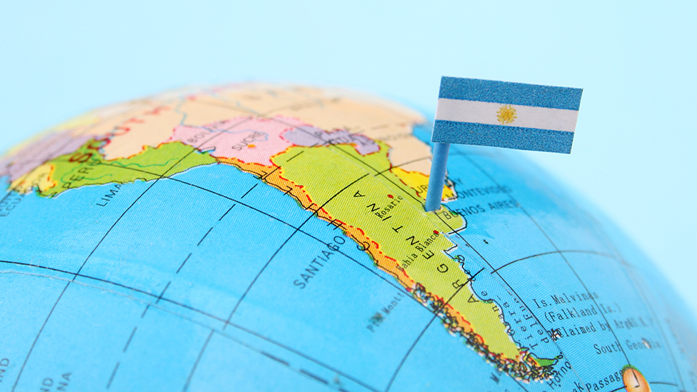

La Ciudad de Buenos Aires o Ciudad Autónoma de Buenos Aires ―también llamada Capital Federal por ser sede del gobierno federal― es la capital de la República Argentina. Está situada en la región centro-este del país, sobre la orilla occidental del Río de la Plata, en plena llanura pampeana. Los resultados definitivos del censo de 2010 estiman la población de la ciudad en 2.890.151 habitantes, y la de su aglomerado urbano, el Gran Buenos Aires, en 12.801.364 habitantes; siendo la mayor área urbana del país, la segunda de Sudamérica, Hispanoamérica y del hemisferio sur, y una de las 20 mayores ciudades del mundo. Es, junto a São Paulo y Ciudad de México, una de las tres ciudades latinoamericanas de categoría alfa, según el estudio GaWC. La ciudad de Buenos Aires se encuentra entre las ciudades con mayor calidad de vida de América Latina, y su renta per cápita se ubica entre las tres más altas de la región. Es la ciudad más visitada de América del Sur. El tejido urbano se asemeja a un abanico que limita al sur, oeste y norte con la provincia deBuenos Aires y al este con el río. Oficialmente la ciudad se encuentra dividida en 48 barriosque derivan, los más antiguos, de las parroquias establecidas en el siglo XIX. La metrópolis esuna ciudad autónoma que constituye uno de los 24 distritos en los que se divide el país. Tienesus propios poderes ejecutivo, legislativo y judicial, además de su propia policía.
Su perfil urbano es marcadamente ecléctico. Se mezclan, a causa de la inmigración, los estilos art decó, art nouveau, neogótico y el francés borbónico. Por esto último se la conoce en el mundo por el apodo de “París de América”. El rascacielos es otro elemento muy común del panorama urbano porteño. Fue elegida por la Unesco como Ciudad del Diseño en 2005 y como Capital Mundial del Libro de 2011

La superficie de la Ciudad es algo superior a los 200 km2 y su perímetro, 60 km. Cerca de tres millones de habitantes residen en ella distribuidos en barrios que, desde el punto de vista político-administrativo, se agrupan en quince comunas. La densidad de la población es de más de 15.000 habitantes por kilómetro cuadrado. Las zonas centro y norte son los espacios territoriales más densamente poblados. En la composición de la población las mujeres son mayoría: hay 114 mujeres por cada 100 varones.Teniendo en cuenta la edad de los habitantes, se considera que la Ciudad posee una poblaciónenvejecida. La población de 65 años y más representa más de 16% del total, y la de menos de 15años supera el 17%. La edad promedio de la población ronda los 40 años: 42 años las mujeres y 37años los varones. Como ocurre en la mayoría de los territorios, las mujeres viven más que losvarones. En la ciudad, en promedio, la esperanza de vida al nacer es 82 años para las mujeres y75 años para los varones.